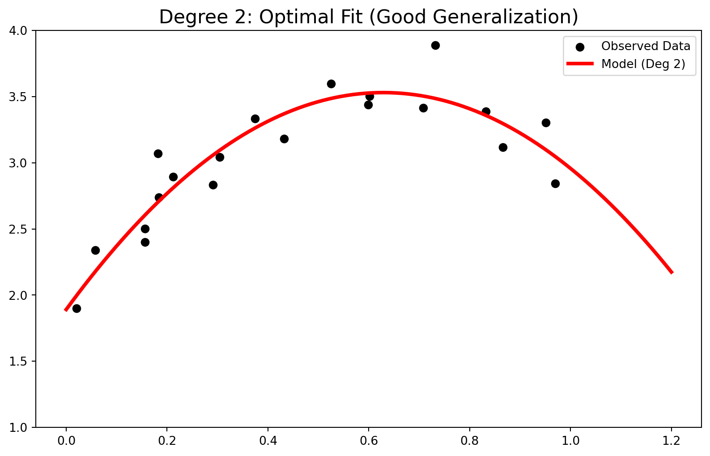
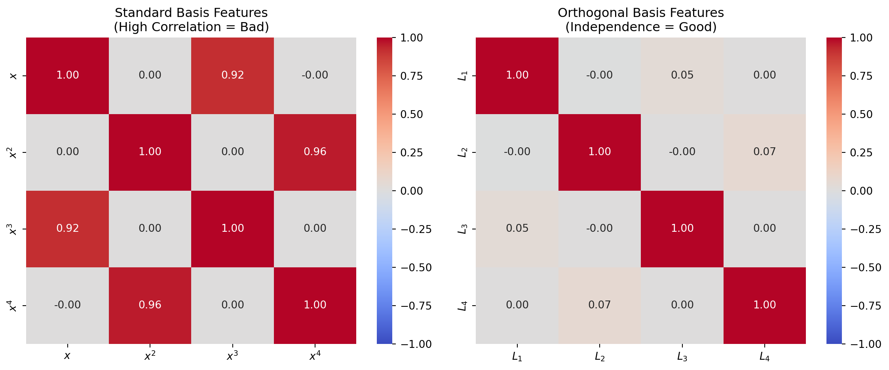

Introduction: Connecting Math to Reality
In quantitative analysis, we face a constant challenge: Reality is complex, but we need simple functions to model it. This is exactly what Approximation Theory is about.
While it has roots in Numerical Analysis, for us in Data Science, it boils down to two main tasks:
Simplification: Turning heavy functions (like complex exponentials) into easy-to-handle polynomials.
Data Fitting: Finding a curve that best represents a set of scattered data points.
In modern Data Science, “Data Fitting” isn’t just theory—it is the backbone of Supervised Learning.
The Discrete Problem: Linear Algebra and Regression
Let’s start with a classic scenario: we have a dataset comparing Marketing Budget (\(x\)) to Sales (\(y\)). We want to find a function \(f(x)\) so that for our data, \(f(x_i) \approx y_i\).
If we assume the relationship is linear, we are essentially trying to solve this system:
\[ \begin{cases} a x_1 + b = y_1 \\ \vdots \\ a x_m + b = y_m \end{cases} \implies A\mathbf{x} = \mathbf{b} \]
The Overdetermined System
Here is the catch: in data science, we almost always have more data points (\(m\)) than variables (\(n\)). This creates an overdetermined system, meaning there is no exact solution for \(Ax=b\).
To fix this, we use Discrete Least Squares. Instead of chasing an impossible exact solution, we minimize the error (the Euclidean norm of the residual \(\mathbf{r} = \mathbf{b} - A\mathbf{x}\)):
\[\min_{\mathbf{x}} \| A\mathbf{x} - \mathbf{b} \|_2^2\]
Calculus gives us the answer where the gradient is zero, leading to the famous Normal Equations:
\[A^T A \mathbf{x} = A^T \mathbf{b}\]
This single equation is the engine behind Linear Regression and many machine learning techniques we use daily.
Feature Engineering and the Vandermonde Matrix
Often, a straight line doesn’t cut it. We might suspect a quadratic relationship: \(P(x) = a_0 + a_1 x + a_2 x^2\). This allows us to ask deeper questions:
What are the base sales? (\(a_0\))
How does the budget drive sales? (\(a_1\))
Does the budget lose effectiveness over time? (\(a_2\))
To solve this, we build the Vandermonde Matrix to hold our features:
\[ V = \begin{bmatrix} 1 & x_1 & x_1^2 \\ 1 & x_2 & x_2^2 \\ \vdots & \vdots & \vdots \\ 1 & x_m & x_m^2 \end{bmatrix} \]
Interpretation: If \(a_2\) turns out negative, we have mathematically proven “Diminishing Returns.”
Visualizing the Bias-Variance Tradeoff
Choosing the right model complexity is tricky.
1. Underfitting (High Bias): If the model is too simple (Degree 1), we miss the pattern entirely.
2. Optimal Fit: A degree 2 polynomial hits the sweet spot, capturing the trend without memorizing noise.

3. Overfitting (High Variance): If the degree is too high (e.g., 15), the model connects the dots blindly, capturing noise instead of the signal.

Selecting the Best Model
To find the right degree (\(n\)), we look at the Mean Squared Error (MSE). As complexity goes up, training error always drops, but test error (generalization) will eventually spike.

Beyond 2D: Multiple Regression
Real-world problems rarely have just one variable. Suppose we add Competitor’s Price (\(z\)). Now, our model is a plane in 3D: \(y = a_0 + a_1 x + a_2 z\).
Mathematically, nothing changes. We solve the same normal equations, just with a larger matrix \(A\).

The Continuous Problem: Signal Processing
Discrete data is standard in business, but fields like audio processing or ECG analysis deal with continuous signals. Here, we want to approximate a complex function \(f(x)\) with a polynomial for compression or speed.
Minimizing the Integral
Since we are dealing with functions, not points, we switch from summation to integration. We minimize the Integral of Squared Error:
\[E = \| f - P_n \|_2^2 = \int_a^b (f(x) - P_n(x))^2 dx\]
The Trap: Standard Basis vs. Orthogonality
A beginner might try the standard basis (\(1, x, x^2, x^3\)). Here is the problem: on the interval \([0, 1]\), \(x^2\) and \(x^3\) look very similar. They are highly correlated (multicollinearity). This confuses the model and makes coefficients unstable.
The fix is Orthogonality. We need features that are independent, meaning their inner product is zero:
\[\langle \phi_i, \phi_j \rangle = \int_a^b \phi_i(x) \phi_j(x) dx = 0 \quad (i \neq j)\]
Orthogonal bases (like Legendre Polynomials) give us:
Decoupling: We can calculate each coefficient separately.
Stability: Adding a higher-degree term doesn’t mess up the previous ones.

Final Simulation: Reconstructing a Complex Signal
To show the power of Continuous Least Squares, let’s reconstruct a complex signal (mixed sine, cosine, and exponentials) using Legendre polynomials. Because of orthogonality, we can compute the “contribution” of each degree independently.

This process highlights the elegance of the math: by projecting complex realities onto simpler orthogonal structures, we get both speed and clarity.
Course Info:
Instructor: Dr. Najmeh Hosseini Monjezi
University: University of Isfahan